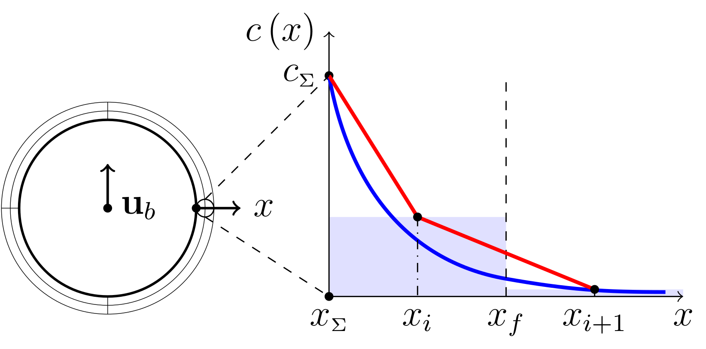

Convection-dominated concentration boundary layers and chemical reactions at rising bubbles
Andre Weiner, Dieter Bothe
Slides available at: andreweiner.github.io/reveal.js/spp1740_annual_meeting_2019.html
Outline
- Research debt
- Maintaining research
- Simulation of reactive species transfer (pseudo 3D)
- Simulations of gas bubbles rising in water (3D)
- Outlook
- Summary
Mass transfer at rising bubbles
High fidelity data for closure models
Image source: appliedccm.com/portfolio-item/bubble
High Péclet number problem

Image source: U. D. Kück et al.: Analyse des Grenzschichtnahen Stofftransports an frei aufsteigenden Gasblasen. CIT (2009), 1599-1606
Specimen calculation
$d_b=1~mm$ water/oxygen at room temperature
- $Pe = Sc\ Re = U_b d_b/D = 10^4 ... 10^7 $
- $$ Re\approx 250;\quad \delta_h/d_b \propto Re^{-1/2};\quad\delta_h\approx 45~\mu m $$
- $$ Sc\approx 500;\quad \delta_c/\delta_h \propto Sc^{-1/2};\quad\delta_c\approx 2.5~\mu m $$
$\delta_c/\delta_h$ typically 10 ... 100
Subgrid-scale modeling
What happens if the mesh is not fine enough?
A. Weiner, D. Bothe (2017)
Solution I
$$ c(x,\delta) = c_\Sigma + (c_\infty - c_\Sigma) \mathrm{erf}(x/\delta) $$
Solution II
$$ \langle c \rangle_V \overset{!}{=} \frac{1}{V}\int_V \left[c_\Sigma + (c_\infty - c_\Sigma) \mathrm{erf}(x/\delta)\right] \mathrm{d}x $$
Workflow
Surfactant influence
Surfactant + mass transfer
Complex reactions?
$A+B\rightarrow P\quad A+P\rightarrow S$
Data-driven SGS modeling

Data generation
IBV problems
- Single phase incompressible Navier-Stokes, inletOutlet velocity, free slip at $ \Sigma $, $\mathbf{u}(t=0)=\mathbf{0}$
$$\partial_t c + \nabla \cdot (\mathbf{u}c-D\nabla c) = -kc$$ $$ c_\Sigma (t) = 1,\quad c_\Omega(t=0) = 0 $$
Parameter variation
132 simultions, $70~GB$ raw data, $16~GB$ reduced
Feature engineering
Sequential backward selection

MLP models
- three models (PyTorch), one model per label
- 353 parameters per model
- 30min training time on a GTX 960
Model errors
Data compression: $16GB\rightarrow 3\times 353$ parameters
Validation
Inference
- models loaded at run-time
- overhead: ~$0.2\%$ per time step
- no iterative inversion
- overhead should be even lower in 3D
Local Sherwood number
Global Sherwood number
Outlook

Summary
THE END
Thank you for your attention!
Get in touch: weiner@mma.tu-darmstadt.de
Time for discussion ...